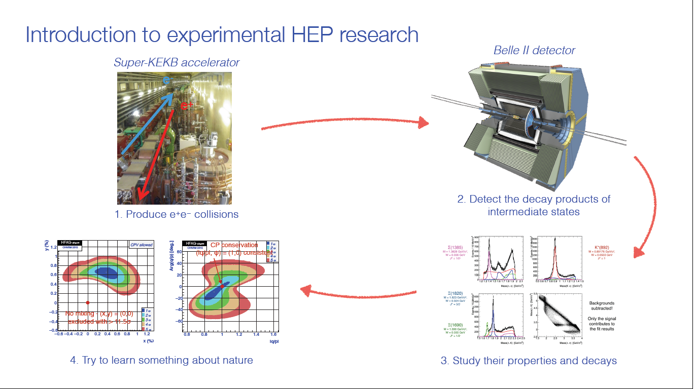
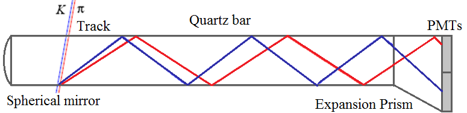

This project was my Master's thesis and took place over the course of several years. It involved the characterization of a small part of the mechanism used to identify particles in the Belle II experiment. The experiment itself aims to identify new physics (beyond the standard model of particle physics) by colliding beams of electrons and positrons within a particle accelerator. After the collision, it is important to know which particles come out and at what angles. Part of this particle identification comes from a piece of fused quartz called the iTOP (imaging time of propagation). When particles (mostly pions and kaons) hit the iTOP, they give off light as Cherenkov radiation. Different particles produce light at different angles depending on their mass. This light bounces around in the iTOP due to total internal reflection until it is measured at one end. It is important to know precisely how the light reflects, which involves an understanding of the reflection and transmission coefficients. This project determined these coefficients from theory using boundary conditions and a change of basis. Pictured below are the general Belle II process and the iTOP. You can read the full thesis here.
 